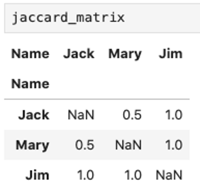

K-means & jaccard
the following table have some data and jaccard ned to be calculated for the following
-
(Jack, Mary)
- (Jack, Jim)
- (Jim, Mary)
import pandas as pd
from scipy.spatial.distance import jaccard
# Create the data
data = {
'Name': ['Jack', 'Mary', 'Jim'],
'Gender': ['M', 'F', 'M'],
'Fever': ['Y', 'Y', 'Y'],
'Cough': ['N', 'N', 'P'],
'Test-1': ['P', 'P', 'N'],
'Test-2': ['N', 'A', 'N'],
'Test-3': ['N', 'P', 'N'],
'Test-4': ['A', 'N', 'A']
}
# Create the DataFrame
df = pd.DataFrame(data)
# Select the relevant columns and convert them to numeric (0 for negative, 1 for positive)
df_binary = df[['Fever', 'Cough', 'Test-1', 'Test-2', 'Test-3', 'Test-4']].replace({'N': 0, 'P': 1, 'Y': 1, 'A': 0})
# Calculate the Jaccard coefficient for each pair of names
jaccard_matrix = pd.DataFrame(columns=df['Name'], index=df['Name'])
for i in range(len(df)):
for j in range(i + 1, len(df)):
jaccard_matrix.iloc[i, j] = jaccard(df_binary.iloc[i, 1:], df_binary.iloc[j, 1:])
jaccard_matrix.iloc[j, i] = jaccard_matrix.iloc[i, j] # Fill the other half of the matrix
# Print the Jaccard coefficient matrix
print(jaccard_matrix)
the output is
